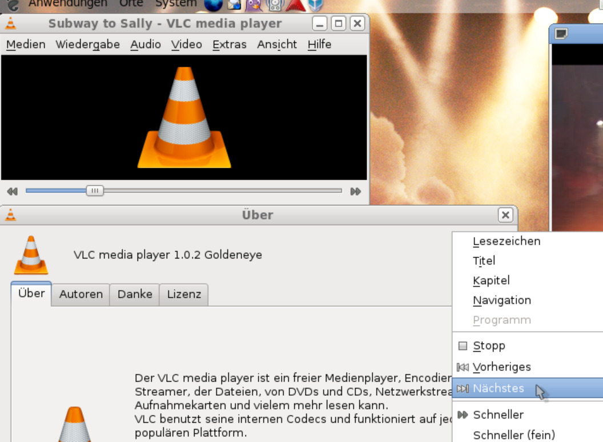

VLC Media Playerは無料で利用できる定番の動画・音楽再生ソフトです。 対応しているファイル形式が非常に多く、ほとんどの動画や音楽ファイルを追加のソフトなしで再生できます。 WindowsだけでなくMacやLinuxでも利用できる人気のメディアプレイヤーです。

公式サイトから無料でダウンロードできます。
★★★★★
動画や音楽を再生するための定番ソフトです。 対応形式が非常に多く、無料とは思えないほど高機能なため、パソコンを使う人なら入れておいて損はありません。
更新日：2026-06-18